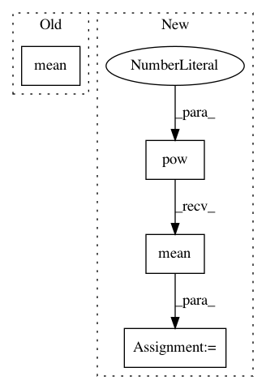

cd1da3fc9c5b68a9e583b8c26e5cdae58560be6d,torch_ac/algos/ppo.py,PPOAlgo,update_parameters,#PPOAlgo#,21
Before Change
surr2 = torch.clamp(ratio, 1.0 - self.clip_eps, 1.0 + self.clip_eps) * advantage_var
action_loss = -torch.min(surr1, surr2).mean()
value_loss = (value - Variable(b.returnn)).pow(2).mean()
loss = action_loss - self.entropy_coef * entropy + self.value_loss_coef * value_loss
// Update actor-critic
After Change
value_clipped = old_value_var + torch.clamp(value - old_value_var, -self.clip_eps, self.clip_eps)
return_var = Variable(b.returnn)
surr1 = (value - return_var).pow(2)
surr2 = (value_clipped - return_var).pow(2)
value_loss = torch.max(surr1, surr2).mean()
loss = action_loss - self.entropy_coef * entropy + self.value_loss_coef * value_loss
// Update actor-critic
In pattern: SUPERPATTERN
Frequency: 3
Non-data size: 4
Instances
Project Name: lcswillems/torch-rl
Commit Name: cd1da3fc9c5b68a9e583b8c26e5cdae58560be6d
Time: 2018-04-19
Author: lcswillems@gmail.com
File Name: torch_ac/algos/ppo.py
Class Name: PPOAlgo
Method Name: update_parameters
Project Name: ikostrikov/pytorch-a2c-ppo-acktr
Commit Name: eb110220d9a39a294479433cefc274e42506737e
Time: 2017-09-16
Author: ikostrikov@gmail.com
File Name: main.py
Class Name:
Method Name: main
Project Name: mariogeiger/se3cnn
Commit Name: 284f27c366884ed821b6c7b1ed37b32fa51f8c25
Time: 2019-08-08
Author: geiger.mario@gmail.com
File Name: se3cnn/non_linearities/rescaled_act.py
Class Name: ShiftedSoftplus
Method Name: __init__